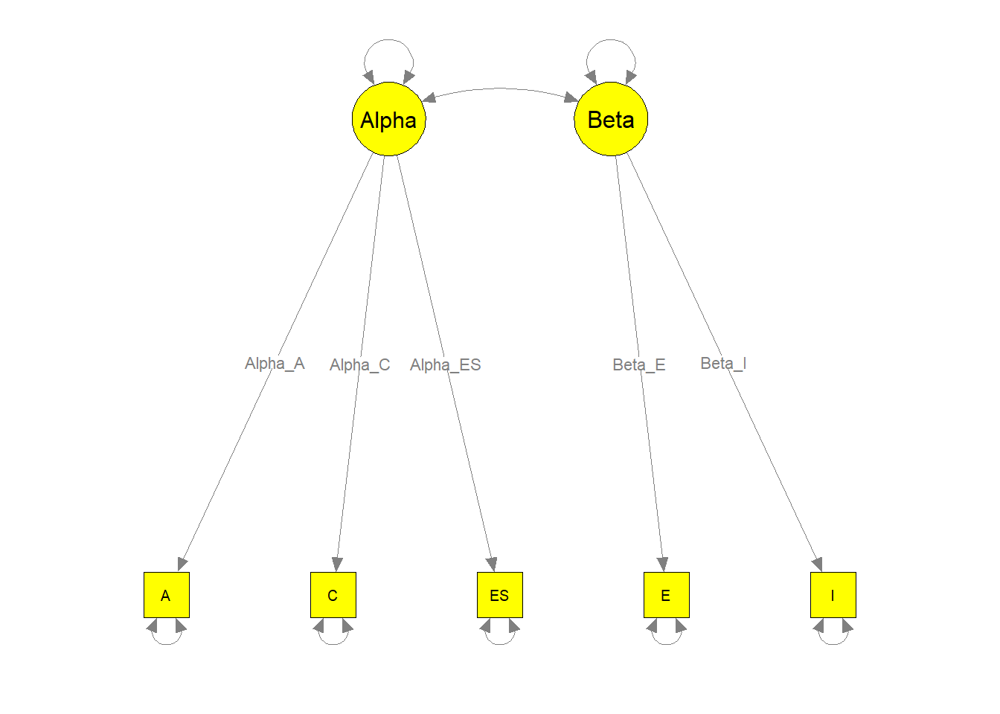
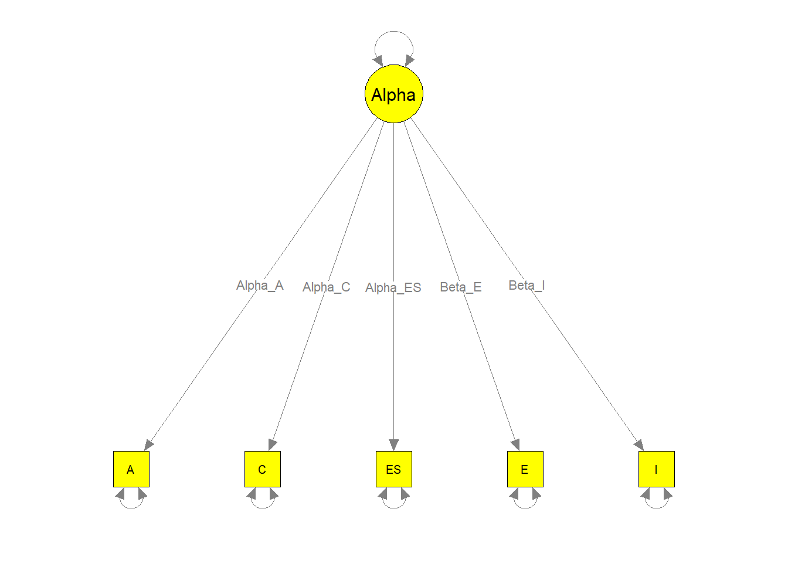
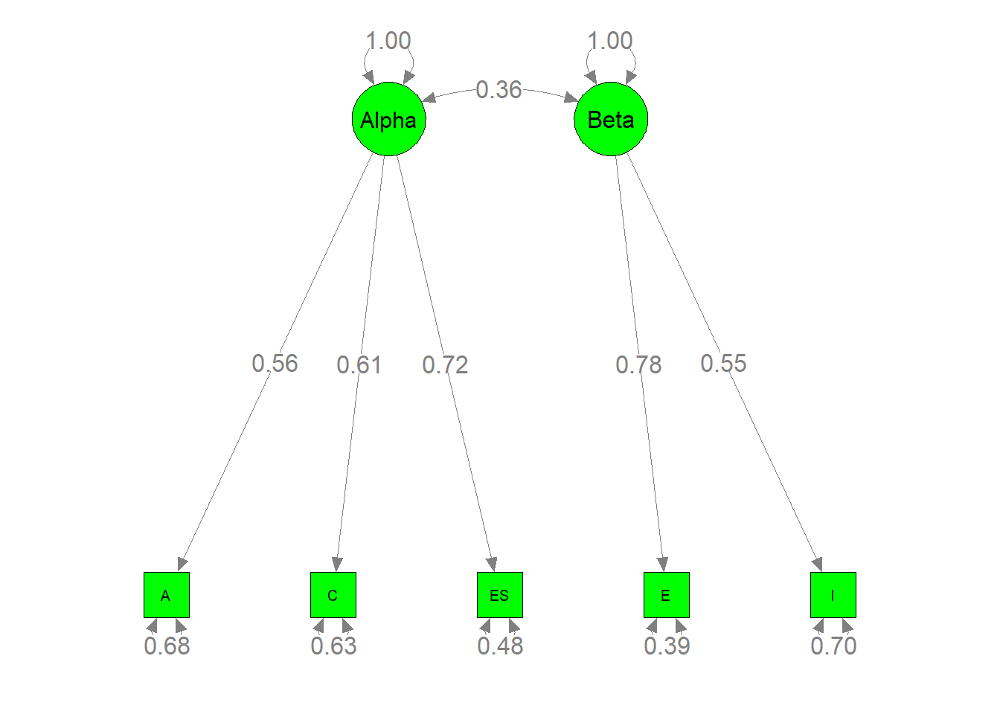
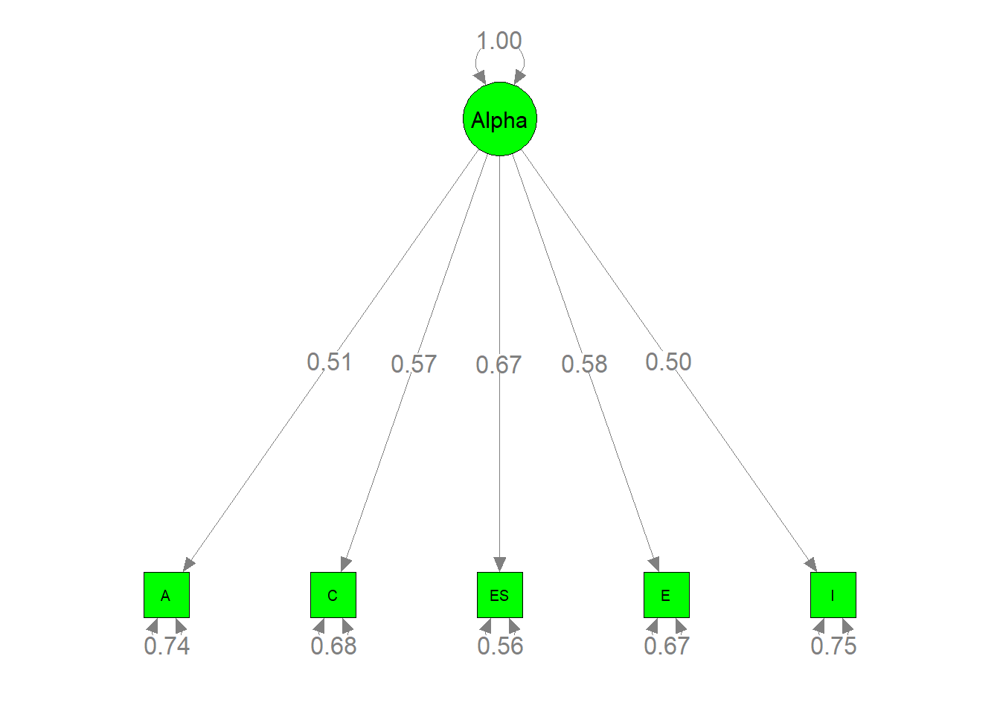
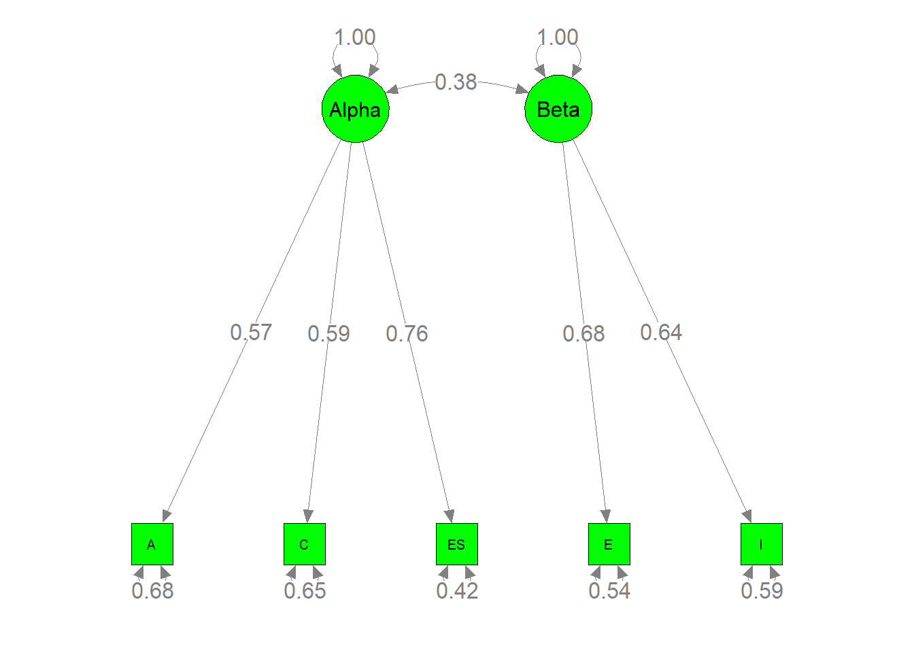
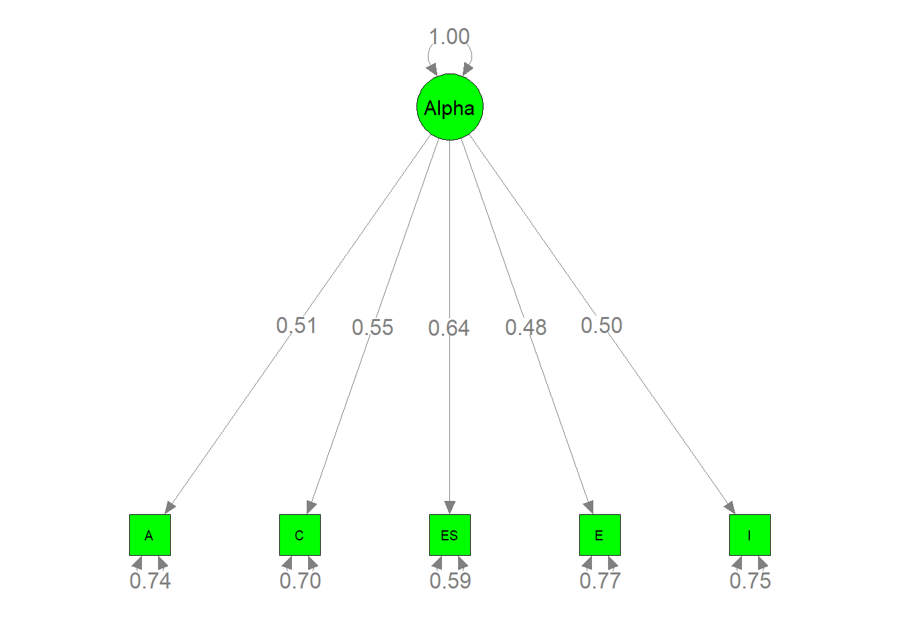
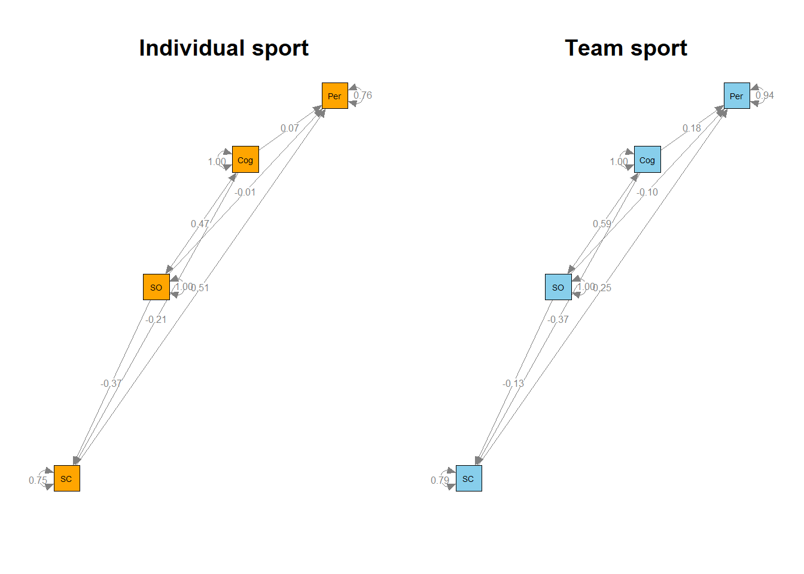
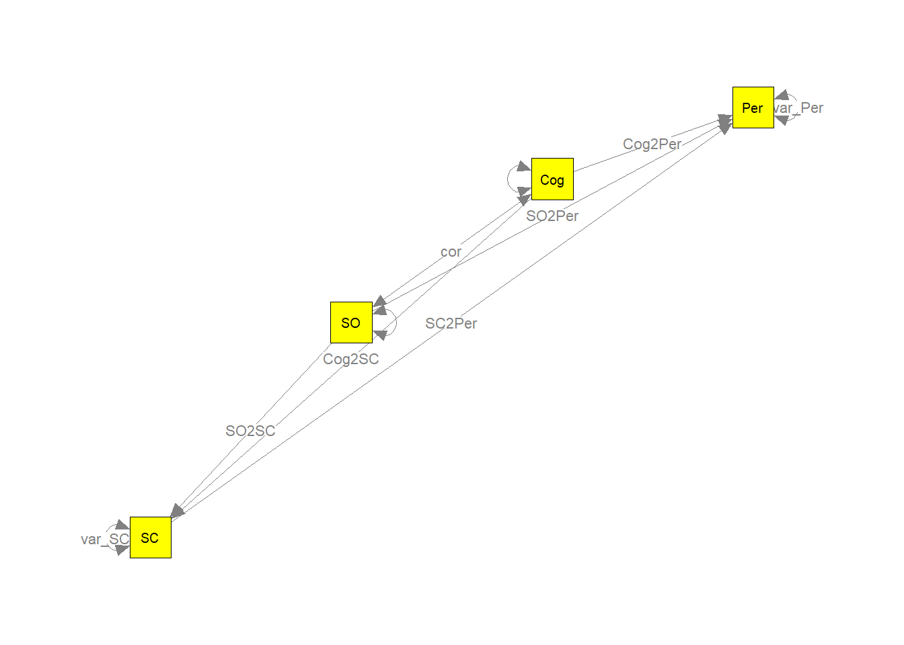
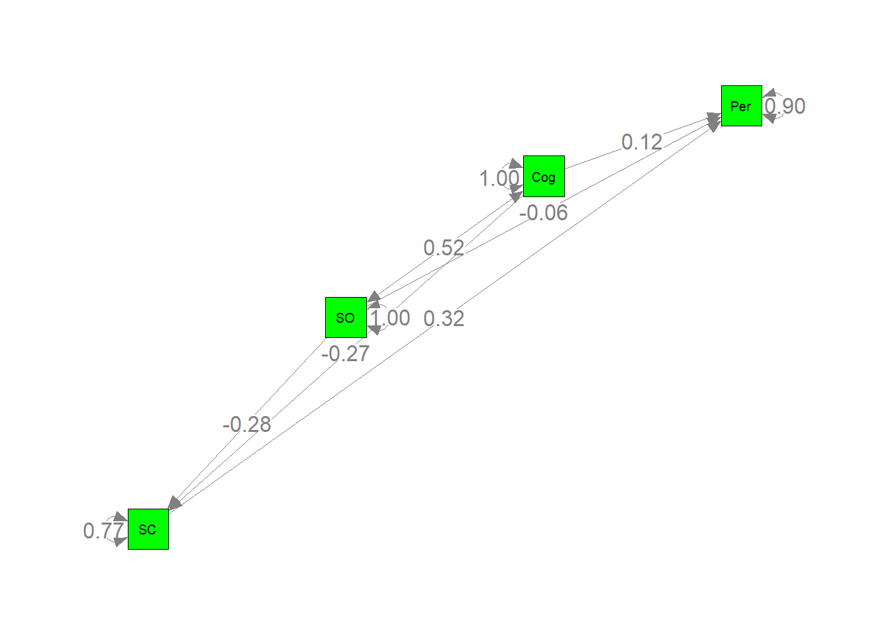

本章介绍了元分析结构方程模型(Meta-analytic structural equation modeling) ，这是一种将元分析和结构方程模型(SEM)相结合的技术，用于综合相关矩阵或协方差矩阵，并在混合相关(协方差)矩阵上拟合结构方程模型。
在本文中将用两个例子来说明如何进行元分析的结构方程模型。使用metaSEM包中自带的数据。
library("metaSEM")1.验证性因素元分析
Digman(1997)对一个包含14项研究的五因素模型进行了二阶因子分析。他认为在五因素模型中有两个二阶因素:一致性A、尽责性C和情绪稳定性E的α因子，外向性E和智力I的β因子。我们使用TSSEM方法来测试所提出的模型。相关矩阵和样本大小分别存储在Digman97\(data和Digman97\)n中。
## 查看相关矩阵
head(Digman97$data)## $`Digman 1 (1994)`
## A C ES E I
## A 1.00 0.62 0.41 -0.48 0.00
## C 0.62 1.00 0.59 -0.10 0.35
## ES 0.41 0.59 1.00 0.27 0.41
## E -0.48 -0.10 0.27 1.00 0.37
## I 0.00 0.35 0.41 0.37 1.00
##
## $`Digman 2 (1994)`
## A C ES E I
## A 1.00 0.39 0.53 -0.30 -0.05
## C 0.39 1.00 0.59 0.07 0.44
## ES 0.53 0.59 1.00 0.09 0.22
## E -0.30 0.07 0.09 1.00 0.45
## I -0.05 0.44 0.22 0.45 1.00
##
## $`Digman 3 (1963c)`
## A C ES E I
## A 1.00 0.65 0.35 0.25 0.14
## C 0.65 1.00 0.37 -0.10 0.33
## ES 0.35 0.37 1.00 0.24 0.41
## E 0.25 -0.10 0.24 1.00 0.41
## I 0.14 0.33 0.41 0.41 1.00
##
## $`Digman & Takemoto-Chock (1981b)`
## A C ES E I
## A 1.00 0.65 0.70 -0.26 -0.03
## C 0.65 1.00 0.71 -0.16 0.24
## ES 0.70 0.71 1.00 0.01 0.11
## E -0.26 -0.16 0.01 1.00 0.66
## I -0.03 0.24 0.11 0.66 1.00
##
## $`Graziano & Ward (1992)`
## A C ES E I
## A 1.00 0.64 0.35 0.29 0.22
## C 0.64 1.00 0.27 0.16 0.22
## ES 0.35 0.27 1.00 0.32 0.36
## E 0.29 0.16 0.32 1.00 0.53
## I 0.22 0.22 0.36 0.53 1.00
##
## $`Yik & Bond (1993)`
## A C ES E I
## A 1.00 0.66 0.57 0.35 0.38
## C 0.66 1.00 0.45 0.20 0.31
## ES 0.57 0.45 1.00 0.49 0.31
## E 0.35 0.20 0.49 1.00 0.59
## I 0.38 0.31 0.31 0.59 1.00## 查看样本量
head(Digman97$n)## [1] 102 149 334 162 91 6561.1固定效应模型
1.1.1 固定效应模型:第一阶段分析
研究人员已经提出了几种MASEM的多变量方法，包括广义最小二乘（GLS）方法（Becker，1992; Becker＆Schram，1994）和两阶段结构方程模型（TSSEM）方法（Cheung，2002; Cheung＆Chan，2005）。由于两阶段结构方程模型的方法更为合理，在本文中，我们将介绍如何使用TSSEM来进行元分析结构方程模型。
在分析的第一阶段，使用tssem1()函数，通过在自变量中指定method=“FEM”，将与固定效应模型相关的矩阵池组合起来:
fixed1 <- tssem1(Digman97$data, Digman97$n, method = "FEM")
summary(fixed1)##
## Call:
## tssem1FEM(Cov = Cov, n = n, cor.analysis = cor.analysis, model.name = model.name,
## cluster = cluster, suppressWarnings = suppressWarnings, silent = silent,
## run = run)
##
## Coefficients:
## Estimate Std.Error z value Pr(>|z|)
## S[1,2] 0.363278 0.013368 27.1761 < 2.2e-16 ***
## S[1,3] 0.390375 0.012880 30.3078 < 2.2e-16 ***
## S[1,4] 0.103572 0.015047 6.8830 5.861e-12 ***
## S[1,5] 0.092286 0.015047 6.1331 8.620e-10 ***
## S[2,3] 0.416070 0.012519 33.2346 < 2.2e-16 ***
## S[2,4] 0.135148 0.014776 9.1464 < 2.2e-16 ***
## S[2,5] 0.141431 0.014866 9.5135 < 2.2e-16 ***
## S[3,4] 0.244459 0.014153 17.2724 < 2.2e-16 ***
## S[3,5] 0.138339 0.014834 9.3260 < 2.2e-16 ***
## S[4,5] 0.424566 0.012375 34.3071 < 2.2e-16 ***
## ---
## Signif. codes: 0 '***' 0.001 '**' 0.01 '*' 0.05 '.' 0.1 ' ' 1
##
## Goodness-of-fit indices:
## Value
## Sample size 4496.0000
## Chi-square of target model 1505.4443
## DF of target model 130.0000
## p value of target model 0.0000
## Chi-square of independence model 4471.4242
## DF of independence model 140.0000
## RMSEA 0.1815
## RMSEA lower 95% CI 0.1736
## RMSEA upper 95% CI 0.1901
## SRMR 0.1621
## TLI 0.6580
## CFI 0.6824
## AIC 1245.4443
## BIC 412.0217
## OpenMx status1: 0 ("0" or "1": The optimization is considered fine.
## Other values may indicate problems.)第一阶段分析中检验相关矩阵同质性的拟合指标为\(χ2 (df = 130, N = 496) = 1505.4443, p = 0.0000, CFI = 0.6824, SRMR = 0.1621, RMSEA = 0.1815\)。这些值表明，假设相关矩阵是齐性的是不合理的。相反，更合适的做法是使用随机效应模型，稍后将对此进行说明。然而，为了说明固定效应模型，我们继续进行第二阶段的分析。
我们还可以通过以下命令提取模型运算之后的相关矩阵。
#查看结果中的相关矩阵
coef(fixed1)## A C ES E I
## A 1.00000000 0.3632782 0.3903748 0.1035716 0.09228557
## C 0.36327824 1.0000000 0.4160695 0.1351477 0.14143058
## ES 0.39037483 0.4160695 1.0000000 0.2444593 0.13833895
## E 0.10357155 0.1351477 0.2444593 1.0000000 0.42456626
## I 0.09228557 0.1414306 0.1383390 0.4245663 1.000000001.1.2 固定效应模型：第二阶段分析
第二阶段分析的结构模型是通过网状动作模型(RAM)形成的 (McArdle and McDonald, 1984)。结构模型由三个矩阵指定。A和S分别用于指定非对称路径和对称方差协方差矩阵。A表示变量之间的回归系数、因子负荷等非对称路径，A中的ij表示变量j到变量i的回归系数。S是一个对称矩阵，表示变量的方差和协方差。它用于指定路径图中的双箭头。对角线元素表示变量的方差。如果变量是自变量，则S中对应的对角线表示方差;否则，S中对应的对角线表示因变量的残差。S中的非对角表示变量的协方差。F是一个选择矩阵，用于过滤观察到的变量。下面的语法指定了A矩阵:
## 因子负荷，其中5为一阶因子总个数，2为二阶因子个体，Alpha和Beta为二阶因子名称，0.3为固定负荷,rep(0,5)是用5个0占位
Lambda1 <- matrix(c(".3*Alpha_A", ".3*Alpha_C", ".3*Alpha_ES", rep(0,5),".3*Beta_E", ".3*Beta_I"),ncol = 2, nrow = 5)
#公因子只有一个的Lamda2,只需要1列，5行
Lambda2 <- matrix(c(".3*Alpha_A", ".3*Alpha_C", ".3*Alpha_ES", ".3*Beta_E", ".3*Beta_I"),ncol = 1, nrow = 5)
head(Lambda1)#查看结构## [,1] [,2]
## [1,] ".3*Alpha_A" "0"
## [2,] ".3*Alpha_C" "0"
## [3,] ".3*Alpha_ES" "0"
## [4,] "0" ".3*Beta_E"
## [5,] "0" ".3*Beta_I"## 用这种方法创建要容易得多，因为有很多0.其中5为一阶因子个数，7为一阶因子个数+二阶因子个数
A1 <- rbind(cbind(matrix(0,ncol=5,nrow=5), Lambda1), matrix(0,ncol=7,nrow=2))
#公因子只有一个的A2
A2 <- rbind(cbind(matrix(0,ncol=5,nrow=5), Lambda2), matrix(0,ncol=6,nrow=1))
##这一步非必需，但有助于检查A1的内容
dimnames(A1) <- list(c("A", "C", "ES", "E", "I", "Alpha", "Beta"),
c("A", "C", "ES", "E", "I", "Alpha", "Beta"))
#公因子只有一个的命名
dimnames(A2) <- list(c("A", "C", "ES", "E", "I", "Alpha"),c("A", "C", "ES", "E", "I", "Alpha"))
A1## A C ES E I Alpha Beta
## A "0" "0" "0" "0" "0" ".3*Alpha_A" "0"
## C "0" "0" "0" "0" "0" ".3*Alpha_C" "0"
## ES "0" "0" "0" "0" "0" ".3*Alpha_ES" "0"
## E "0" "0" "0" "0" "0" "0" ".3*Beta_E"
## I "0" "0" "0" "0" "0" "0" ".3*Beta_I"
## Alpha "0" "0" "0" "0" "0" "0" "0"
## Beta "0" "0" "0" "0" "0" "0" "0"A2## A C ES E I Alpha
## A "0" "0" "0" "0" "0" ".3*Alpha_A"
## C "0" "0" "0" "0" "0" ".3*Alpha_C"
## ES "0" "0" "0" "0" "0" ".3*Alpha_ES"
## E "0" "0" "0" "0" "0" ".3*Beta_E"
## I "0" "0" "0" "0" "0" ".3*Beta_I"
## Alpha "0" "0" "0" "0" "0" "0"上面的输出显示了A1矩阵。Alpha_A是二阶因子α到一阶因子A的负荷，而“0.3”是初始值。当标签相同时，参数受到相同的约束。“0”的值表示这些因子负载固定在0。下面的语法指定了S矩阵:
##潜变量之间的协方差矩阵
Phi1 <- matrix(c(1, "0.3*cor", "0.3*cor",1), ncol=2, nrow=2)
#公囝子只有一个的Phi
Phi2 <- matrix(c(1), ncol=1, nrow=1)
##观察变量误差之间的误差方差,为S矩阵的对角线上的值
Psi1 <- Diag(c(".2*e1", ".2*e2", ".2*e3", ".2*e4", ".2*e5"))
#公因子只有一个的Psi
Psi2 <- Diag(c(".2*e1", ".2*e2", ".2*e3", ".2*e4", ".2*e5"))
##将它们组合起来创建S矩阵
S1 <- bdiagMat(list(Psi1, Phi1))
##将公因子只有一个的Phi,Psi组合起来
S2 <- bdiagMat(list(Psi2, Phi2))
##这个步骤不是必需的，但是对检查S1的内容很有帮助
dimnames(S1) <- list(c("A", "C", "ES", "E", "I", "Alpha", "Beta"),
c("A", "C", "ES", "E", "I", "Alpha", "Beta"))
#公因子只有一个的S1命名
dimnames(S2) <- list(c("A", "C", "ES", "E", "I", "Alpha"),c("A", "C", "ES", "E", "I", "Alpha"))
S1## A C ES E I Alpha Beta
## A ".2*e1" "0" "0" "0" "0" "0" "0"
## C "0" ".2*e2" "0" "0" "0" "0" "0"
## ES "0" "0" ".2*e3" "0" "0" "0" "0"
## E "0" "0" "0" ".2*e4" "0" "0" "0"
## I "0" "0" "0" "0" ".2*e5" "0" "0"
## Alpha "0" "0" "0" "0" "0" "1" "0.3*cor"
## Beta "0" "0" "0" "0" "0" "0.3*cor" "1"S2## A C ES E I Alpha
## A ".2*e1" "0" "0" "0" "0" "0"
## C "0" ".2*e2" "0" "0" "0" "0"
## ES "0" "0" ".2*e3" "0" "0" "0"
## E "0" "0" "0" ".2*e4" "0" "0"
## I "0" "0" "0" "0" ".2*e5" "0"
## Alpha "0" "0" "0" "0" "0" "1"下面的语法指定了F矩阵:
##前5个变量是显变量,而最后2个变量是潜变量。
F1 <- create.Fmatrix(c(1, 1, 1, 1, 1, 0, 0), as.mxMatrix=FALSE)
#公因子只有一个的F1
F2 <- create.Fmatrix(c(1, 1, 1, 1, 1, 0), as.mxMatrix=FALSE)
##这个步骤是不必要的，但有助于检查F1的内容
dimnames(F1) <- list(c("A", "C", "ES", "E", "I"),c("A", "C", "ES", "E", "I", "Alpha", "Beta"))
#公因子只有一个的F1命名
dimnames(F2) <- list(c("A", "C", "ES", "E", "I"),c("A", "C", "ES", "E", "I", "Alpha"))
F1## A C ES E I Alpha Beta
## A 1 0 0 0 0 0 0
## C 0 1 0 0 0 0 0
## ES 0 0 1 0 0 0 0
## E 0 0 0 1 0 0 0
## I 0 0 0 0 1 0 0F2## A C ES E I Alpha
## A 1 0 0 0 0 0
## C 0 1 0 0 0 0
## ES 0 0 1 0 0 0
## E 0 0 0 1 0 0
## I 0 0 0 0 1 0然后，我们可以通过tssem2()命令拟合结构模型:
fixed2 <- tssem2(fixed1, Amatrix=A1, Smatrix=S1, Fmatrix=F1,model.name="Digman97 FEM")
fixed3 <- tssem2(fixed1, Amatrix=A2, Smatrix=S2, Fmatrix=F2,model.name="Digman97 FEM2")
summary(fixed2)##
## Call:
## wls(Cov = coef.tssem1FEM(tssem1.obj), aCov = vcov.tssem1FEM(tssem1.obj),
## n = sum(tssem1.obj$n), Amatrix = Amatrix, Smatrix = Smatrix,
## Fmatrix = Fmatrix, diag.constraints = diag.constraints, cor.analysis = tssem1.obj$cor.analysis,
## intervals.type = intervals.type, mx.algebras = mx.algebras,
## model.name = model.name, suppressWarnings = suppressWarnings,
## silent = silent, run = run)
##
## 95% confidence intervals: z statistic approximation
## Coefficients:
## Estimate Std.Error lbound ubound z value Pr(>|z|)
## Alpha_A 0.562800 0.015380 0.532656 0.592944 36.593 < 2.2e-16 ***
## Alpha_C 0.605217 0.015324 0.575183 0.635251 39.496 < 2.2e-16 ***
## Beta_E 0.781413 0.034244 0.714297 0.848529 22.819 < 2.2e-16 ***
## Alpha_ES 0.719201 0.015685 0.688458 0.749943 45.852 < 2.2e-16 ***
## Beta_I 0.551374 0.026031 0.500355 0.602394 21.181 < 2.2e-16 ***
## cor 0.362678 0.022384 0.318806 0.406549 16.203 < 2.2e-16 ***
## ---
## Signif. codes: 0 '***' 0.001 '**' 0.01 '*' 0.05 '.' 0.1 ' ' 1
##
## Goodness-of-fit indices:
## Value
## Sample size 4496.0000
## Chi-square of target model 65.4526
## DF of target model 4.0000
## p value of target model 0.0000
## Number of constraints imposed on "Smatrix" 0.0000
## DF manually adjusted 0.0000
## Chi-square of independence model 3112.8171
## DF of independence model 10.0000
## RMSEA 0.0585
## RMSEA lower 95% CI 0.0465
## RMSEA upper 95% CI 0.0713
## SRMR 0.0284
## TLI 0.9505
## CFI 0.9802
## AIC 57.4526
## BIC 31.8088
## OpenMx status1: 0 ("0" or "1": The optimization is considered fine.
## Other values indicate problems.)summary(fixed3)##
## Call:
## wls(Cov = coef.tssem1FEM(tssem1.obj), aCov = vcov.tssem1FEM(tssem1.obj),
## n = sum(tssem1.obj$n), Amatrix = Amatrix, Smatrix = Smatrix,
## Fmatrix = Fmatrix, diag.constraints = diag.constraints, cor.analysis = tssem1.obj$cor.analysis,
## intervals.type = intervals.type, mx.algebras = mx.algebras,
## model.name = model.name, suppressWarnings = suppressWarnings,
## silent = silent, run = run)
##
## 95% confidence intervals: z statistic approximation
## Coefficients:
## Estimate Std.Error lbound ubound z value Pr(>|z|)
## Alpha_A 0.512309 0.014673 0.483550 0.541068 34.915 < 2.2e-16 ***
## Alpha_C 0.566867 0.013995 0.539438 0.594297 40.506 < 2.2e-16 ***
## Beta_E 0.575178 0.015376 0.545040 0.605315 37.407 < 2.2e-16 ***
## Alpha_ES 0.666005 0.013339 0.639862 0.692149 49.930 < 2.2e-16 ***
## Beta_I 0.499576 0.015710 0.468785 0.530366 31.800 < 2.2e-16 ***
## ---
## Signif. codes: 0 '***' 0.001 '**' 0.01 '*' 0.05 '.' 0.1 ' ' 1
##
## Goodness-of-fit indices:
## Value
## Sample size 4496.0000
## Chi-square of target model 691.7957
## DF of target model 5.0000
## p value of target model 0.0000
## Number of constraints imposed on "Smatrix" 0.0000
## DF manually adjusted 0.0000
## Chi-square of independence model 3112.8171
## DF of independence model 10.0000
## RMSEA 0.1748
## RMSEA lower 95% CI 0.1639
## RMSEA upper 95% CI 0.1859
## SRMR 0.1431
## TLI 0.5573
## CFI 0.7787
## AIC 681.7957
## BIC 649.7410
## OpenMx status1: 0 ("0" or "1": The optimization is considered fine.
## Other values indicate problems.)第二阶段结构模型上的拟合指数\(χ2 (df = 4, N = 4, 496) = 65.4526, p = 0.0000,CFI=0.9505, SRMR=0.0465, RMSEA=0.0585\)。虽然拟合优度指数看起来不错，但由于第一阶段分析中拟合优度指数较差，我们在解释时应该谨慎。
我们可以通过图形化显示模型来检查参数是否正确标记。这有助于我们检验理论模型是否与拟合模型相同。
##用来绘制模型的库
library("semPlot")
##将模型转换为stmodel对象,latNames:潜在变量的名称
my.plot1 <- meta2semPlot(fixed2, latNames=c("Alpha","Beta"))
my.plot2 <- meta2semPlot(fixed3, latNames="Alpha")
##用参数标签绘制模型
semPaths(my.plot1, whatLabels="path", nCharEdges=10, nCharNodes=10,
color="yellow", edge.label.cex=0.8)
semPaths(my.plot2, whatLabels="path", nCharEdges=10, nCharNodes=10,
color="yellow", edge.label.cex=0.8)
##更重要的是，我们可以通过下面的命令绘制参数估计值
semPaths(my.plot1, whatLabels="est", nCharNodes=10, color="green",
edge.label.cex=1.2)
semPaths(my.plot2, whatLabels="est", nCharNodes=10, color="green",
edge.label.cex=1.2)
1.2随机效应模型
1.2.1随机效应模型:第一阶段分析
随机效应TSSEM即在tssem1()中指定method=“REM”。默认情况下（RE.type =“Symm”），使用随机效应中的正定义对称协方差矩阵。可以使用RE.type=“Diag”指定随机效应的对角矩阵。研究人员还可以指定RE.type=" 0 "。由于随机效应的方差分量为零，因此该模型成为固定效应模型。该模型等价于Becker(1992)提出的广义最小二乘方法。
random1 <- tssem1(Digman97$data, Digman97$n, method="REM", RE.type="Diag")
summary(random1)##
## Call:
## meta(y = ES, v = acovR, RE.constraints = Diag(paste0(RE.startvalues,
## "*Tau2_", 1:no.es, "_", 1:no.es)), RE.lbound = RE.lbound,
## I2 = I2, model.name = model.name, suppressWarnings = TRUE,
## silent = silent, run = run)
##
## 95% confidence intervals: z statistic approximation
## Coefficients:
## Estimate Std.Error lbound ubound z value
## Intercept1 0.38971905 0.05429256 0.28330759 0.49613051 7.1781
## Intercept2 0.43265879 0.04145136 0.35141561 0.51390197 10.4377
## Intercept3 0.04945630 0.06071080 -0.06953468 0.16844728 0.8146
## Intercept4 0.09603707 0.04478712 0.00825593 0.18381821 2.1443
## Intercept5 0.42724238 0.03911621 0.35057602 0.50390874 10.9224
## Intercept6 0.11929317 0.04106204 0.03881305 0.19977328 2.9052
## Intercept7 0.19292426 0.04757963 0.09966991 0.28617862 4.0548
## Intercept8 0.22690163 0.03240893 0.16338129 0.29042197 7.0012
## Intercept9 0.18105568 0.04258856 0.09758364 0.26452773 4.2513
## Intercept10 0.43614968 0.03205960 0.37331401 0.49898535 13.6043
## Tau2_1_1 0.03648372 0.01513055 0.00682839 0.06613904 2.4113
## Tau2_2_2 0.01963098 0.00859789 0.00277942 0.03648254 2.2832
## Tau2_3_3 0.04571438 0.01952285 0.00745030 0.08397847 2.3416
## Tau2_4_4 0.02236122 0.00995084 0.00285794 0.04186450 2.2472
## Tau2_5_5 0.01729073 0.00796404 0.00168149 0.03289996 2.1711
## Tau2_6_6 0.01815482 0.00895896 0.00059557 0.03571407 2.0264
## Tau2_7_7 0.02604883 0.01130266 0.00389602 0.04820164 2.3047
## Tau2_8_8 0.00988761 0.00513713 -0.00018097 0.01995620 1.9247
## Tau2_9_9 0.01988244 0.00895053 0.00233973 0.03742516 2.2214
## Tau2_10_10 0.01049222 0.00501578 0.00066147 0.02032296 2.0918
## Pr(>|z|)
## Intercept1 7.068e-13 ***
## Intercept2 < 2.2e-16 ***
## Intercept3 0.41529
## Intercept4 0.03201 *
## Intercept5 < 2.2e-16 ***
## Intercept6 0.00367 **
## Intercept7 5.018e-05 ***
## Intercept8 2.538e-12 ***
## Intercept9 2.126e-05 ***
## Intercept10 < 2.2e-16 ***
## Tau2_1_1 0.01590 *
## Tau2_2_2 0.02242 *
## Tau2_3_3 0.01920 *
## Tau2_4_4 0.02463 *
## Tau2_5_5 0.02992 *
## Tau2_6_6 0.04272 *
## Tau2_7_7 0.02119 *
## Tau2_8_8 0.05426 .
## Tau2_9_9 0.02633 *
## Tau2_10_10 0.03645 *
## ---
## Signif. codes: 0 '***' 0.001 '**' 0.01 '*' 0.05 '.' 0.1 ' ' 1
##
## Q statistic on the homogeneity of effect sizes: 1220.334
## Degrees of freedom of the Q statistic: 130
## P value of the Q statistic: 0
##
## Heterogeneity indices (based on the estimated Tau2):
## Estimate
## Intercept1: I2 (Q statistic) 0.9326
## Intercept2: I2 (Q statistic) 0.8872
## Intercept3: I2 (Q statistic) 0.9325
## Intercept4: I2 (Q statistic) 0.8703
## Intercept5: I2 (Q statistic) 0.8797
## Intercept6: I2 (Q statistic) 0.8480
## Intercept7: I2 (Q statistic) 0.8887
## Intercept8: I2 (Q statistic) 0.7669
## Intercept9: I2 (Q statistic) 0.8590
## Intercept10: I2 (Q statistic) 0.8193
##
## Number of studies (or clusters): 14
## Number of observed statistics: 140
## Number of estimated parameters: 20
## Degrees of freedom: 120
## -2 log likelihood: -112.4196
## OpenMx status1: 0 ("0" or "1": The optimization is considered fine.
## Other values may indicate problems.)I2表示相关系数的异质性。例如，上述分析表明，基于Q统计量的I2的变化范围为0.7669 ~ 0.9326，表明相关元素间存在高度异质性。在多元随机效应meta分析中，随机效应TSSEM通常基于固定效应均值向量的饱和模型和随机效应方差分量，因此不存在拟合优度指标。
如果要以矩阵形式提取估计的平均相关矩阵，可以使用以下命令:
##选择固定效果并将其转换为相关矩阵
vec2symMat( coef(random1, select="fixed"), diag=FALSE )## [,1] [,2] [,3] [,4] [,5]
## [1,] 1.00000000 0.3897191 0.4326588 0.0494563 0.09603707
## [2,] 0.38971905 1.0000000 0.4272424 0.1192932 0.19292426
## [3,] 0.43265879 0.4272424 1.0000000 0.2269016 0.18105568
## [4,] 0.04945630 0.1192932 0.2269016 1.0000000 0.43614968
## [5,] 0.09603707 0.1929243 0.1810557 0.4361497 1.000000001.2.2随机效应模型：第二阶段分析
阶段2的分析跟固定效应的过程相似，通过tssem2()函数进行。此函数自动处理在阶段1分析中使用的是固定效果模型还是随机效果模型。
random2 <- tssem2(random1, Amatrix=A1, Smatrix=S1, Fmatrix=F1)
summary(random2)##
## Call:
## wls(Cov = pooledS, aCov = aCov, n = tssem1.obj$total.n, Amatrix = Amatrix,
## Smatrix = Smatrix, Fmatrix = Fmatrix, diag.constraints = diag.constraints,
## cor.analysis = cor.analysis, intervals.type = intervals.type,
## mx.algebras = mx.algebras, model.name = model.name, suppressWarnings = suppressWarnings,
## silent = silent, run = run)
##
## 95% confidence intervals: z statistic approximation
## Coefficients:
## Estimate Std.Error lbound ubound z value Pr(>|z|)
## Alpha_A 0.569435 0.052425 0.466684 0.672187 10.8619 < 2.2e-16 ***
## Alpha_C 0.590630 0.052649 0.487439 0.693821 11.2182 < 2.2e-16 ***
## Beta_E 0.679955 0.075723 0.531541 0.828370 8.9795 < 2.2e-16 ***
## Alpha_ES 0.760455 0.061963 0.639009 0.881901 12.2726 < 2.2e-16 ***
## Beta_I 0.641842 0.072459 0.499825 0.783859 8.8580 < 2.2e-16 ***
## cor 0.377691 0.047402 0.284785 0.470596 7.9679 1.554e-15 ***
## ---
## Signif. codes: 0 '***' 0.001 '**' 0.01 '*' 0.05 '.' 0.1 ' ' 1
##
## Goodness-of-fit indices:
## Value
## Sample size 4496.0000
## Chi-square of target model 7.8204
## DF of target model 4.0000
## p value of target model 0.0984
## Number of constraints imposed on "Smatrix" 0.0000
## DF manually adjusted 0.0000
## Chi-square of independence model 501.6765
## DF of independence model 10.0000
## RMSEA 0.0146
## RMSEA lower 95% CI 0.0000
## RMSEA upper 95% CI 0.0297
## SRMR 0.0436
## TLI 0.9806
## CFI 0.9922
## AIC -0.1796
## BIC -25.8234
## OpenMx status1: 0 ("0" or "1": The optimization is considered fine.
## Other values indicate problems.)random3 <- tssem2(random1, Amatrix=A2, Smatrix=S2, Fmatrix=F2)
summary(random3)##
## Call:
## wls(Cov = pooledS, aCov = aCov, n = tssem1.obj$total.n, Amatrix = Amatrix,
## Smatrix = Smatrix, Fmatrix = Fmatrix, diag.constraints = diag.constraints,
## cor.analysis = cor.analysis, intervals.type = intervals.type,
## mx.algebras = mx.algebras, model.name = model.name, suppressWarnings = suppressWarnings,
## silent = silent, run = run)
##
## 95% confidence intervals: z statistic approximation
## Coefficients:
## Estimate Std.Error lbound ubound z value Pr(>|z|)
## Alpha_A 0.513737 0.047999 0.419662 0.607813 10.703 < 2.2e-16 ***
## Alpha_C 0.551676 0.044962 0.463552 0.639800 12.270 < 2.2e-16 ***
## Beta_E 0.478533 0.040395 0.399360 0.557706 11.846 < 2.2e-16 ***
## Alpha_ES 0.637111 0.044654 0.549590 0.724631 14.268 < 2.2e-16 ***
## Beta_I 0.502138 0.045018 0.413904 0.590371 11.154 < 2.2e-16 ***
## ---
## Signif. codes: 0 '***' 0.001 '**' 0.01 '*' 0.05 '.' 0.1 ' ' 1
##
## Goodness-of-fit indices:
## Value
## Sample size 4496.0000
## Chi-square of target model 101.7275
## DF of target model 5.0000
## p value of target model 0.0000
## Number of constraints imposed on "Smatrix" 0.0000
## DF manually adjusted 0.0000
## Chi-square of independence model 501.6765
## DF of independence model 10.0000
## RMSEA 0.0656
## RMSEA lower 95% CI 0.0548
## RMSEA upper 95% CI 0.0770
## SRMR 0.1359
## TLI 0.6065
## CFI 0.8033
## AIC 91.7275
## BIC 59.6727
## OpenMx status1: 0 ("0" or "1": The optimization is considered fine.
## Other values indicate problems.)第二阶段结构模型上的健康指数\(χ2 (df = 4, N = 4, 496) = 7.8204, p = 0.0984,SRMR=0.0436, CFI=0.9922,TLI=0.9806 RMSEA=0.0146\)。这表明模型与数据非常吻合。α因子的因子负荷分别为0.5694、0.5906和0.6800，β因子的因子负荷分别为0.7605和0.6418。这两个因子的因子相关系数为0.3937。所有这些估计都具有统计学意义。
绘制结构方程图
##用来绘制模型的库
library("semPlot")
##将模型转换为stmodel对象,latNames:潜在变量的名称
my.plot3 <- meta2semPlot(random2, latNames=c("Alpha","Beta"))
my.plot4 <- meta2semPlot(random3, latNames="Alpha")
##用参数标签绘制模型
semPaths(my.plot3, whatLabels="path", nCharEdges=10, nCharNodes=10,
color="yellow", edge.label.cex=0.8)semPaths(my.plot4, whatLabels="path", nCharEdges=10, nCharNodes=10,
color="yellow", edge.label.cex=0.8)##绘制参数估计值
semPaths(my.plot3, whatLabels="est", nCharNodes=10, color="green",
edge.label.cex=1.2)
semPaths(my.plot4, whatLabels="est", nCharNodes=10, color="green",
edge.label.cex=1.2)
2.meta路径分析
这个数据集是来自于 Becker (2009)和Craft et al. (2003)的研究包括10个关于个人绩效(Per)、认知能力(Cog,)、躯体认知能力(SO)和自信心(SC)之间相关矩阵。因变量是个人绩效(Per)，而其他变量要么是自变量，要么是中介变量。
head(Becker09$data)#相关矩阵池## $`1`
## Performance Cognitive Somatic Self_confidence
## Performance 1.00 -0.55 -0.48 0.66
## Cognitive -0.55 1.00 0.47 -0.38
## Somatic -0.48 0.47 1.00 -0.46
## Self_confidence 0.66 -0.38 -0.46 1.00
##
## $`3`
## Performance Cognitive Somatic Self_confidence
## Performance 1.00 0.53 -0.12 0.03
## Cognitive 0.53 1.00 0.52 -0.48
## Somatic -0.12 0.52 1.00 -0.40
## Self_confidence 0.03 -0.48 -0.40 1.00
##
## $`6`
## Performance Cognitive Somatic Self_confidence
## Performance 1.00 0.44 0.46 NA
## Cognitive 0.44 1.00 0.67 NA
## Somatic 0.46 0.67 1.00 NA
## Self_confidence NA NA NA NA
##
## $`10`
## Performance Cognitive Somatic Self_confidence
## Performance 1.00 -0.39 -0.17 0.19
## Cognitive -0.39 1.00 0.21 -0.54
## Somatic -0.17 0.21 1.00 -0.43
## Self_confidence 0.19 -0.54 -0.43 1.00
##
## $`17`
## Performance Cognitive Somatic Self_confidence
## Performance 1.00 0.1 0.31 -0.17
## Cognitive 0.10 1.0 NA NA
## Somatic 0.31 NA NA NA
## Self_confidence -0.17 NA NA NA
##
## $`22`
## Performance Cognitive Somatic Self_confidence
## Performance 1.00 0.23 0.08 0.51
## Cognitive 0.23 1.00 0.45 -0.29
## Somatic 0.08 0.45 1.00 -0.44
## Self_confidence 0.51 -0.29 -0.44 1.00head(Becker09$n)#每个研究的被试数## [1] 142 37 16 14 45 1002.1固定效应模型
2.1.1固定效应模型：第一阶段
与验证性因素元分析一样，能过设定method=“FEM”来进行第一阶段的分析：
##第一阶段分析
fixed1 <- tssem1(Becker09$data, Becker09$n, method="FEM")
summary(fixed1)##
## Call:
## tssem1FEM(Cov = Cov, n = n, cor.analysis = cor.analysis, model.name = model.name,
## cluster = cluster, suppressWarnings = suppressWarnings, silent = silent,
## run = run)
##
## Coefficients:
## Estimate Std.Error z value Pr(>|z|)
## S[1,2] -0.067649 0.041996 -1.6109 0.1072101
## S[1,3] -0.157168 0.040966 -3.8365 0.0001248 ***
## S[1,4] 0.369860 0.037133 9.9605 < 2.2e-16 ***
## S[2,3] 0.526319 0.029981 17.5551 < 2.2e-16 ***
## S[2,4] -0.413867 0.034900 -11.8588 < 2.2e-16 ***
## S[3,4] -0.416681 0.034772 -11.9833 < 2.2e-16 ***
## ---
## Signif. codes: 0 '***' 0.001 '**' 0.01 '*' 0.05 '.' 0.1 ' ' 1
##
## Goodness-of-fit indices:
## Value
## Sample size 633.0000
## Chi-square of target model 212.2591
## DF of target model 46.0000
## p value of target model 0.0000
## Chi-square of independence model 638.4062
## DF of independence model 52.0000
## RMSEA 0.2391
## RMSEA lower 95% CI 0.2086
## RMSEA upper 95% CI 0.2741
## SRMR 0.2048
## TLI 0.6795
## CFI 0.7165
## AIC 120.2591
## BIC -84.4626
## OpenMx status1: 0 ("0" or "1": The optimization is considered fine.
## Other values may indicate problems.)拟合指数显示，测试相关矩阵的同质性在第一阶段分析\(χ2 (df = 46,N = 633) = 212.2591, p = 0.0000, CFI = 0.7165, RMSEA = 0.2391, SRMR = 0.2086\)。这些值表明，假设相关矩阵是不齐性的。
2.1.2固定效应模型：第二阶段
由以上结果可知，该数据首选还是通过随机效应模型进行研究，但是，为了进一步说明固定效应模型，我们继续使用此数据进行分析。。由于模型中有“中介”，因此必须指定参数diag.constraints=TRUE。由于参数diag.constraints=TRUE的规范中没有SE，我们可以通过指定interval .type=“LB”来请求LBCI。
首先，定义A, S矩阵：
##回归系数矩阵结构，即模型结构矩阵，其中cog2per代表cog到per有路径，其它意思相同，0表示没有路径
A1 <- create.mxMatrix(c(0, "0.1*Cog2Per", "0.1*SO2Per", "0.1*SC2Per",
0, 0, 0, 0,
0, 0, 0, 0,
0, "0.1*Cog2SC", "0.1*SO2SC",0),
type="Full", byrow=TRUE, ncol=4, nrow=4,
as.mxMatrix=FALSE)
##这个步骤不是必需的，但是对于检查模型是有用的
dimnames(A1)[[1]] <- dimnames(A1)[[2]] <- c("Per","Cog","SO","SC")
##变量之间的协方差矩阵
S1 <- create.mxMatrix(c("0.1*var_Per",
0, 1,
0, "0.1*cor", 1,
0, 0, 0, "0.1*var_SC"),
byrow=TRUE, type="Symm", as.mxMatrix=FALSE)
##这个步骤不是必需的，但是对于检查模型是有用的
dimnames(S1)[[1]] <- dimnames(S1)[[2]] <- c("Per","Cog","SO","SC")
##第二阶段分析
fixed2 <- tssem2(fixed1, Amatrix=A1, Smatrix=S1, diag.constraints=TRUE,
intervals.type="LB")
summary(fixed2)##
## Call:
## wls(Cov = coef.tssem1FEM(tssem1.obj), aCov = vcov.tssem1FEM(tssem1.obj),
## n = sum(tssem1.obj$n), Amatrix = Amatrix, Smatrix = Smatrix,
## Fmatrix = Fmatrix, diag.constraints = diag.constraints, cor.analysis = tssem1.obj$cor.analysis,
## intervals.type = intervals.type, mx.algebras = mx.algebras,
## model.name = model.name, suppressWarnings = suppressWarnings,
## silent = silent, run = run)
##
## 95% confidence intervals: Likelihood-based statistic
## Coefficients:
## Estimate Std.Error lbound ubound z value Pr(>|z|)
## Cog2Per 0.128077 NA 0.032434 0.224633 NA NA
## SC2Per 0.398474 NA 0.314932 0.482859 NA NA
## SO2Per -0.058540 NA -0.153196 0.036211 NA NA
## Cog2SC -0.269105 NA -0.353349 -0.185481 NA NA
## SO2SC -0.275046 NA -0.359140 -0.191483 NA NA
## var_Per 0.852084 NA 0.791401 0.902516 NA NA
## var_SC 0.774020 NA 0.709439 0.830946 NA NA
## cor 0.526319 NA 0.467558 0.585081 NA NA
##
## Goodness-of-fit indices:
## Value
## Sample size 633.00
## Chi-square of target model 0.00
## DF of target model 0.00
## p value of target model 0.00
## Number of constraints imposed on "Smatrix" 2.00
## DF manually adjusted 0.00
## Chi-square of independence model 530.32
## DF of independence model 6.00
## RMSEA 0.00
## RMSEA lower 95% CI 0.00
## RMSEA upper 95% CI 0.00
## SRMR 0.00
## TLI -Inf
## CFI 1.00
## AIC 0.00
## BIC 0.00
## OpenMx status1: 0 ("0" or "1": The optimization is considered fine.
## Other values indicate problems.)上述分析表明，相关矩阵是异构的，因此，需要搞清楚这种异构的原因，需要进行亚组分析。
2.1.3固定效应模型:亚组分析第一阶段
如果研究相关矩阵变得同质，分组变量可以用来解释这种异质性的原因。首先，查看亚组(需研究者自行定义)，然后，使用cluster=来指定要分析的亚组。
##显示研究的类型
Becker09$Type_of_sport## [1] "Individual" "Individual" "Team" "Individual" "Individual"
## [6] "Individual" "Team" "Team" "Team" "Individual"##不同研究类型是否会造成差异
cluster1 <- tssem1(Becker09$data, Becker09$n, method="FEM",
cluster=Becker09$Type_of_sport)
summary(cluster1)## $Individual
##
## Call:
## tssem1FEM(Cov = data.cluster[[i]], n = n.cluster[[i]], cor.analysis = cor.analysis,
## model.name = model.name, suppressWarnings = suppressWarnings)
##
## Coefficients:
## Estimate Std.Error z value Pr(>|z|)
## S[1,2] -0.126875 0.055611 -2.2815 0.02252 *
## S[1,3] -0.211441 0.054081 -3.9097 9.241e-05 ***
## S[1,4] 0.487390 0.043680 11.1583 < 2.2e-16 ***
## S[2,3] 0.473040 0.043307 10.9230 < 2.2e-16 ***
## S[2,4] -0.386483 0.047228 -8.1833 2.220e-16 ***
## S[3,4] -0.466696 0.043510 -10.7262 < 2.2e-16 ***
## ---
## Signif. codes: 0 '***' 0.001 '**' 0.01 '*' 0.05 '.' 0.1 ' ' 1
##
## Goodness-of-fit indices:
## Value
## Sample size 368.0000
## Chi-square of target model 136.6832
## DF of target model 25.0000
## p value of target model 0.0000
## Chi-square of independence model 402.8658
## DF of independence model 31.0000
## RMSEA 0.2703
## RMSEA lower 95% CI 0.2284
## RMSEA upper 95% CI 0.3176
## SRMR 0.2234
## TLI 0.6276
## CFI 0.6997
## AIC 86.6832
## BIC -11.0189
## OpenMx status1: 0 ("0" or "1": The optimization is considered fine.
## Other values may indicate problems.)
##
## $Team
##
## Call:
## tssem1FEM(Cov = data.cluster[[i]], n = n.cluster[[i]], cor.analysis = cor.analysis,
## model.name = model.name, suppressWarnings = suppressWarnings)
##
## Coefficients:
## Estimate Std.Error z value Pr(>|z|)
## S[1,2] 0.0051421 0.0632738 0.0813 0.9352297
## S[1,3] -0.0868765 0.0622957 -1.3946 0.1631419
## S[1,4] 0.2087475 0.0609202 3.4266 0.0006112 ***
## S[2,3] 0.5850250 0.0404768 14.4533 < 2.2e-16 ***
## S[2,4] -0.4454112 0.0514597 -8.6555 < 2.2e-16 ***
## S[3,4] -0.3464400 0.0561304 -6.1721 6.741e-10 ***
## ---
## Signif. codes: 0 '***' 0.001 '**' 0.01 '*' 0.05 '.' 0.1 ' ' 1
##
## Goodness-of-fit indices:
## Value
## Sample size 265.0000
## Chi-square of target model 50.7961
## DF of target model 15.0000
## p value of target model 0.0000
## Chi-square of independence model 235.5404
## DF of independence model 21.0000
## RMSEA 0.1902
## RMSEA lower 95% CI 0.1350
## RMSEA upper 95% CI 0.2504
## SRMR 0.1536
## TLI 0.7664
## CFI 0.8331
## AIC 20.7961
## BIC -32.8999
## OpenMx status1: 0 ("0" or "1": The optimization is considered fine.
## Other values may indicate problems.)LR统计量和拟合优度表明相关矩阵仍然是异构的，通过变一亚组进行分析并没有用。
2.1.4固定效应模型:亚组分析第二阶段
作为一个例子，我们仍然展示了如何进行第二阶段的分析，虽然我们不打算解释结果,因为第一阶段的分析表明，没有必要进行下一步分析。
cluster2 <- tssem2(cluster1, Amatrix=A1, Smatrix=S1, diag.constraints=TRUE,
intervals.type="LB")
summary(cluster2)## $Individual
##
## Call:
## wls(Cov = coef.tssem1FEM(tssem1.obj), aCov = vcov.tssem1FEM(tssem1.obj),
## n = sum(tssem1.obj$n), Amatrix = Amatrix, Smatrix = Smatrix,
## Fmatrix = Fmatrix, diag.constraints = diag.constraints, cor.analysis = tssem1.obj$cor.analysis,
## intervals.type = intervals.type, mx.algebras = mx.algebras,
## model.name = model.name, suppressWarnings = suppressWarnings,
## silent = silent, run = run)
##
## 95% confidence intervals: Likelihood-based statistic
## Coefficients:
## Estimate Std.Error lbound ubound z value Pr(>|z|)
## Cog2Per 0.0748833 NA -0.0428986 0.1937988 NA NA
## SC2Per 0.5128147 NA 0.4109856 0.6167938 NA NA
## SO2Per -0.0075349 NA -0.1285838 0.1141126 NA NA
## Cog2SC -0.2134881 NA -0.3199655 -0.1075417 NA NA
## SO2SC -0.3657078 NA -0.4687658 -0.2635122 NA NA
## var_Per 0.7579668 NA 0.6668707 0.8346076 NA NA
## var_SC 0.7468161 NA 0.6587892 0.8225276 NA NA
## cor 0.4730400 NA 0.3881604 0.5579199 NA NA
##
## Goodness-of-fit indices:
## Value
## Sample size 368.00
## Chi-square of target model 0.00
## DF of target model 0.00
## p value of target model 0.00
## Number of constraints imposed on "Smatrix" 2.00
## DF manually adjusted 0.00
## Chi-square of independence model 343.74
## DF of independence model 6.00
## RMSEA 0.00
## RMSEA lower 95% CI 0.00
## RMSEA upper 95% CI 0.00
## SRMR 0.00
## TLI -Inf
## CFI 1.00
## AIC 0.00
## BIC 0.00
## OpenMx status1: 0 ("0" or "1": The optimization is considered fine.
## Other values indicate problems.)
##
## $Team
##
## Call:
## wls(Cov = coef.tssem1FEM(tssem1.obj), aCov = vcov.tssem1FEM(tssem1.obj),
## n = sum(tssem1.obj$n), Amatrix = Amatrix, Smatrix = Smatrix,
## Fmatrix = Fmatrix, diag.constraints = diag.constraints, cor.analysis = tssem1.obj$cor.analysis,
## intervals.type = intervals.type, mx.algebras = mx.algebras,
## model.name = model.name, suppressWarnings = suppressWarnings,
## silent = silent, run = run)
##
## 95% confidence intervals: Likelihood-based statistic
## Coefficients:
## Estimate Std.Error lbound ubound z value Pr(>|z|)
## Cog2Per 0.1781450 NA 0.0202237 0.3391795 NA NA
## SC2Per 0.2521560 NA 0.1175514 0.3880278 NA NA
## SO2Per -0.1037389 NA -0.2533333 0.0451972 NA NA
## Cog2SC -0.3690411 NA -0.5040432 -0.2366887 NA NA
## SO2SC -0.1305417 NA -0.2697379 0.0075562 NA NA
## var_Per 0.9374346 NA 0.8645122 0.9828723 NA NA
## var_SC 0.7904001 NA 0.6899118 0.8717703 NA NA
## cor 0.5850250 NA 0.5056921 0.6643578 NA NA
##
## Goodness-of-fit indices:
## Value
## Sample size 265.0
## Chi-square of target model 0.0
## DF of target model 0.0
## p value of target model 0.0
## Number of constraints imposed on "Smatrix" 2.0
## DF manually adjusted 0.0
## Chi-square of independence model 291.4
## DF of independence model 6.0
## RMSEA 0.0
## RMSEA lower 95% CI 0.0
## RMSEA upper 95% CI 0.0
## SRMR 0.0
## TLI -Inf
## CFI 1.0
## AIC 0.0
## BIC 0.0
## OpenMx status1: 0 ("0" or "1": The optimization is considered fine.
## Other values indicate problems.)画出结构图
##将模型转换为带有2个图的semPlotModel对象
my.plots <- lapply(X=cluster2, FUN=meta2semPlot,manNames=c("Per","Cog","SO","SC") )
##设置两个图
layout(t(1:2))
##如果标签重叠，我们可以使用layout =“spring”来修改它
semPaths(my.plots[[1]], whatLabels="est", nCharNodes=10,color="orange", layout="circle2", edge.label.cex=0.8)
title("Individual sport")
semPaths(my.plots[[2]], whatLabels="est", nCharNodes=10,color="skyblue", layout="circle2", edge.label.cex=0.8)
title("Team sport")
2.2随机效应模型
2.2.1随机效应模型：第一阶段
由于数据不足，我们通过指定RE.type =“Diag”限制了方差矩阵的结构。 \(I2\)的相关系数不同于0.0000至0.8521。随机效应模型比固定效应模型更适合此数据组。TSSEM随机效应以下语法：
## First stage analysis
random1 <- tssem1(Becker09$data, Becker09$n, method="REM", RE.type="Diag")
summary(random1)##
## Call:
## meta(y = ES, v = acovR, RE.constraints = Diag(paste0(RE.startvalues,
## "*Tau2_", 1:no.es, "_", 1:no.es)), RE.lbound = RE.lbound,
## I2 = I2, model.name = model.name, suppressWarnings = TRUE,
## silent = silent, run = run)
##
## 95% confidence intervals: z statistic approximation
## Coefficients:
## Estimate Std.Error lbound ubound z value
## Intercept1 -4.4862e-02 1.0865e-01 -2.5781e-01 1.6808e-01 -0.4129
## Intercept2 -1.3404e-01 7.8022e-02 -2.8696e-01 1.8884e-02 -1.7179
## Intercept3 2.9919e-01 7.9986e-02 1.4242e-01 4.5596e-01 3.7405
## Intercept4 5.2311e-01 3.2705e-02 4.5901e-01 5.8721e-01 15.9947
## Intercept5 -4.1544e-01 4.5544e-02 -5.0470e-01 -3.2617e-01 -9.1217
## Intercept6 -4.1817e-01 4.5764e-02 -5.0786e-01 -3.2847e-01 -9.1375
## Tau2_1_1 9.4922e-02 5.1078e-02 -5.1897e-03 1.9503e-01 1.8584
## Tau2_2_2 3.3531e-02 2.3734e-02 -1.2988e-02 8.0049e-02 1.4127
## Tau2_3_3 3.4663e-02 2.2792e-02 -1.0009e-02 7.9334e-02 1.5208
## Tau2_4_4 1.5086e-10 6.7323e-03 -1.3195e-02 1.3195e-02 0.0000
## Tau2_5_5 4.9552e-03 7.4239e-03 -9.5953e-03 1.9506e-02 0.6675
## Tau2_6_6 4.9722e-03 6.7071e-03 -8.1734e-03 1.8118e-02 0.7413
## Pr(>|z|)
## Intercept1 0.6796682
## Intercept2 0.0858102 .
## Intercept3 0.0001837 ***
## Intercept4 < 2.2e-16 ***
## Intercept5 < 2.2e-16 ***
## Intercept6 < 2.2e-16 ***
## Tau2_1_1 0.0631176 .
## Tau2_2_2 0.1577304
## Tau2_3_3 0.1283075
## Tau2_4_4 1.0000000
## Tau2_5_5 0.5044738
## Tau2_6_6 0.4584884
## ---
## Signif. codes: 0 '***' 0.001 '**' 0.01 '*' 0.05 '.' 0.1 ' ' 1
##
## Q statistic on the homogeneity of effect sizes: 173.4801
## Degrees of freedom of the Q statistic: 46
## P value of the Q statistic: 1.110223e-16
##
## Heterogeneity indices (based on the estimated Tau2):
## Estimate
## Intercept1: I2 (Q statistic) 0.8521
## Intercept2: I2 (Q statistic) 0.6752
## Intercept3: I2 (Q statistic) 0.7195
## Intercept4: I2 (Q statistic) 0.0000
## Intercept5: I2 (Q statistic) 0.2874
## Intercept6: I2 (Q statistic) 0.2876
##
## Number of studies (or clusters): 10
## Number of observed statistics: 52
## Number of estimated parameters: 12
## Degrees of freedom: 40
## -2 log likelihood: -30.48963
## OpenMx status1: 0 ("0" or "1": The optimization is considered fine.
## Other values may indicate problems.)由于模型是饱和模型，因此LR统计量为0且自由度df为0。当有中介变量时，我们也可能需要估计间接效应。通过mx.algebras函数，我们可以计算单独的间接效应和总的间接效应。也可以获得关于这些值的LBCI。
2.2.2随机效应模型：第二阶段
## 第二阶段分析，其中，cog2sc表示cog到sc的路径系数，而Cog2SC*SC2Per表示cog通过sc到per的间接效应
random2 <- tssem2(random1, Amatrix=A1, Smatrix=S1, diag.constraints=TRUE,
intervals.type="LB", model.name="TSSEM2 Becker09",
mx.algebras=list( Cog=mxAlgebra(Cog2SC*SC2Per, name="Cog"),
SO=mxAlgebra(SO2SC*SC2Per, name="SO"),
Cog_SO=mxAlgebra(Cog2SC*SC2Per+SO2SC*SC2Per,name="Cog_SO")) )
summary(random2)##
## Call:
## wls(Cov = pooledS, aCov = aCov, n = tssem1.obj$total.n, Amatrix = Amatrix,
## Smatrix = Smatrix, Fmatrix = Fmatrix, diag.constraints = diag.constraints,
## cor.analysis = cor.analysis, intervals.type = intervals.type,
## mx.algebras = mx.algebras, model.name = model.name, suppressWarnings = suppressWarnings,
## silent = silent, run = run)
##
## 95% confidence intervals: Likelihood-based statistic
## Coefficients:
## Estimate Std.Error lbound ubound z value Pr(>|z|)
## Cog2Per 0.122464 NA -0.197061 0.446654 NA NA
## SC2Per 0.323857 NA 0.108424 0.543235 NA NA
## SO2Per -0.062671 NA -0.316275 0.191045 NA NA
## Cog2SC -0.270792 NA -0.393385 -0.148645 NA NA
## SO2SC -0.276514 NA -0.399589 -0.153555 NA NA
## var_Per 0.900200 NA 0.734669 0.977062 NA NA
## var_SC 0.771873 NA 0.689783 0.841777 NA NA
## cor 0.523108 NA 0.459007 0.587208 NA NA
##
## mxAlgebras objects (and their 95% likelihood-based CIs):
## lbound Estimate ubound
## Cog[1,1] -0.1780060 -0.08769768 -0.02765545
## SO[1,1] -0.1754968 -0.08955092 -0.02888341
## Cog_SO[1,1] -0.3141945 -0.17724859 -0.05953534
##
## Goodness-of-fit indices:
## Value
## Sample size 633.00
## Chi-square of target model 0.00
## DF of target model 0.00
## p value of target model 0.00
## Number of constraints imposed on "Smatrix" 2.00
## DF manually adjusted 0.00
## Chi-square of independence model 323.17
## DF of independence model 6.00
## RMSEA 0.00
## RMSEA lower 95% CI 0.00
## RMSEA upper 95% CI 0.00
## SRMR 0.00
## TLI -Inf
## CFI 1.00
## AIC 0.00
## BIC 0.00
## OpenMx status1: 0 ("0" or "1": The optimization is considered fine.
## Other values indicate problems.)我们可以绘制模型并标记参数以进行检查。
my.plot <- meta2semPlot(random2, manNames=c("Per","Cog","SO","SC") )
##画出模型图
semPaths(my.plot, whatLabels="path", nCharEdges=10, nCharNodes=10,layout="circle2", color="yellow", edge.label.cex=0.8)
##画出参数估计图
semPaths(my.plot, whatLabels="est", nCharNodes=10, layout="circle2",color="green", edge.label.cex=1.2)
附：如何导入数据
#相关矩阵的例子
correlation <- list(matrix(c(1,0.6,0.3,0.5,1,0.5,0.3,0.6,1),nrow = 3,ncol = 3),
matrix(c(1,0.7,0.2,0.4,1,0.4,0.2,0.7,1),nrow = 3,ncol = 3))
#给相关矩阵加研究名
names(correlation) <- c("shun(2019)", "peng(2018)")
#研究的类别等亚组变量
type<-c("China","USA")
#每个研究被试的人数
N_participation<-c(201,208)
#组合数据
shun2020<-list(correlation,type,N_participation)
#命名list
names(shun2020) <- c("data", "country","n")
head(shun2020)## $data
## $data$`shun(2019)`
## [,1] [,2] [,3]
## [1,] 1.0 0.5 0.3
## [2,] 0.6 1.0 0.6
## [3,] 0.3 0.5 1.0
##
## $data$`peng(2018)`
## [,1] [,2] [,3]
## [1,] 1.0 0.4 0.2
## [2,] 0.7 1.0 0.7
## [3,] 0.2 0.4 1.0
##
##
## $country
## [1] "China" "USA"
##
## $n
## [1] 201 208